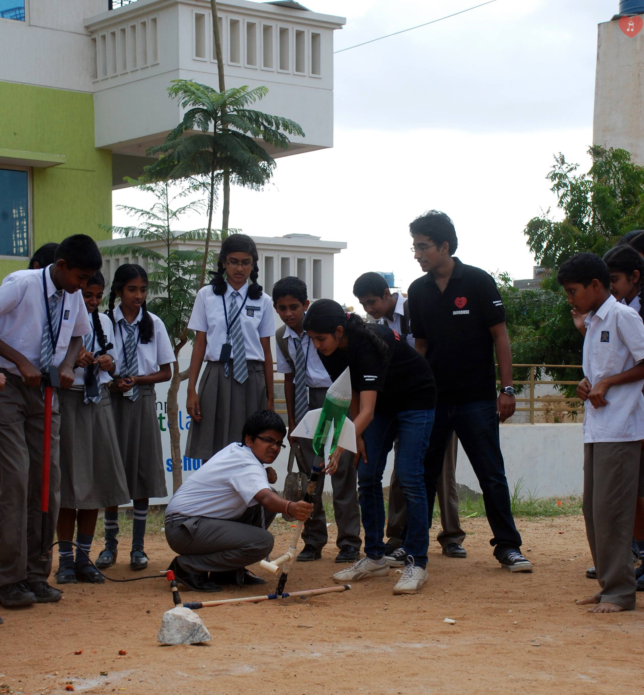

|
Commitment to Diversity, Equity and Inclusion
|
 |
Diversity fosters innovation and creative accomplishments, as has been pointed out by many.
My firm commitment to promoting DEI led me to co-found a non-profitable organization, JamHouse.
JamHouse activities are designed to motivate children, especially the underprivileged, to develop an interest in STEM and combat stereotypes.
We accomplished this through scientific activities like building water rockets and line following robots in teams created by mentors.
Additionally, I have held leadership positions including Professional Development Chair of the Aerospace Graduate Student Advisory Committee at UIUC and Postdoc Liaison for the Committee on Diversity and Inclusion at JHU.
Some initiatives I have undertaken involve developing equitable hiring standards for student organizations and organizing student discussions on cultures, teaching styles and career selections in different countries.
I am also currently involved with Lumiere Education in their outreach program to mentor students with low-income backgrounds.
As a woman in engineering, I have first-hand experience of being underrepresented and have unfortunately witnessed many of my colleagues get exploited and develop psychological issues.
To combat this, two activities in which I want to engage my students are (1) regular pain-point meetings to discuss the challenges they face in the group and at the university, and (2) monthly journal club meetings focused on addressing issues related to DEI in STEM including topics like gender-gap and racial-gap in publishing.
Above all, I will educate and promote my students to be DEI advocates through community outreach and mentoring program.
As a faculty, I aim towards providing an equitable environment in my lab that is conducive to personal and educational development, and I see my past efforts and future plans taking me a step closer to achieving this dream.
|
|